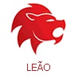

|  | ||
|
|
|
|
No tempo de Leão toda a energia da natureza está direcionada para a tarefa de dar frutos. Nessa época, ela está empenhada em mostrar que é capaz de repetir o ato mais nobre de Deus: criar um outro ser à sua imagem e semelhança. É por isso que as crianças que nascem neste tempo já nascem comprometidas com o desafio da criação. Para os leoninos tudo na vida é um teste. Desde bebês eles encaram o difícil desafio de exteriorizar o seu mundo interior e serem reconhecidos por isso. Muitos sentem um imenso prazer com essa tarefa e vão fazer esta exteriorização de forma dramática. Alguns não se contentam com isso e vão se tornar atores para poder fazer a mesma coisa muitas e muitas vezes, com muitas e diferentes personalidades. Muitas vezes eles parecem muito individualistas, mas temos que entender que eles precisam mesmo prestar atenção neles mesmos. Eles só podem criar a partir de um material que está dentro deles. Poucas pessoas conseguem ficar indiferentes ao espetáculo de um leonino exibindo sua radiação solar para uma grande platéia. A arte parece que nasceu para eles. Só ela pode atender à necessidade leonina de estar só e concentrado em si mesmo e ao mesmo tempo produzir uma forte impressão na sociedade. |
Monica Horta, astróloga do Delas
A energia da Lua em Áries somada ao poder de Urano vai fazer você se sentir como se estivesse nascendo de novo. Com o coração batendo mais forte, o sangue circulando mais rápido e as ideias surgindo e se organizando com uma facilidade surpreendente. Aposte em você e não tenha medo do futuro. |